A single overhead bedroom light does one job, and it does it badly. It's either on, flooding the whole room, or off.
A bedroom actually needs different kinds of light for different moments. Reading, winding down, getting dressed in the morning.
These 11 ideas layer together to cover all of that, not just one bright default setting.
Most of them cost very little and don't require any real electrical work.
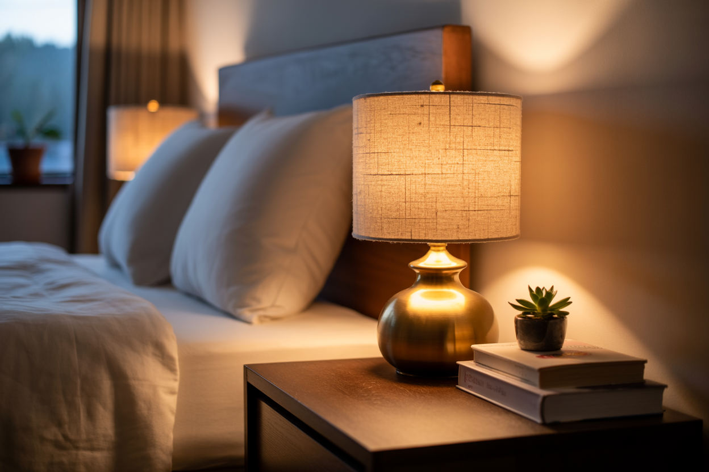
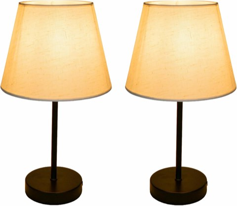
Bedside Lamps Set of 2 for Bedroom, 15" Modern Minimalist Small Table Lamps
Shop on Amazon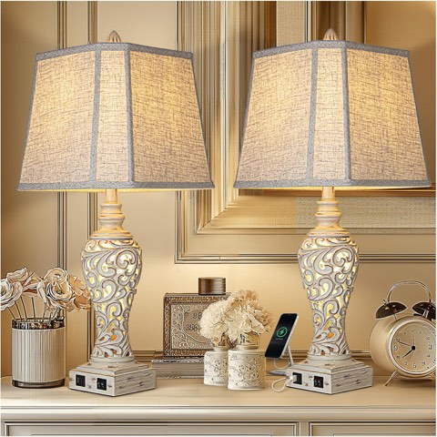
LuxSight Collection 28.5" Table Lamps Set of 2 with Nightlight for Bedroom
Shop on Amazon1. Go Big With a Statement Fixture
A chandelier, an oversized pendant, or a sculptural fixture turns your bedroom's main light source into a genuine design feature.
This works especially well in a room with higher ceilings, where the fixture has room to actually make an impact.
Pairing a statement fixture with a dimmer keeps it from being too harsh as a daily-use light.
It's the biggest single investment on this list, but also the most dramatic visual change.
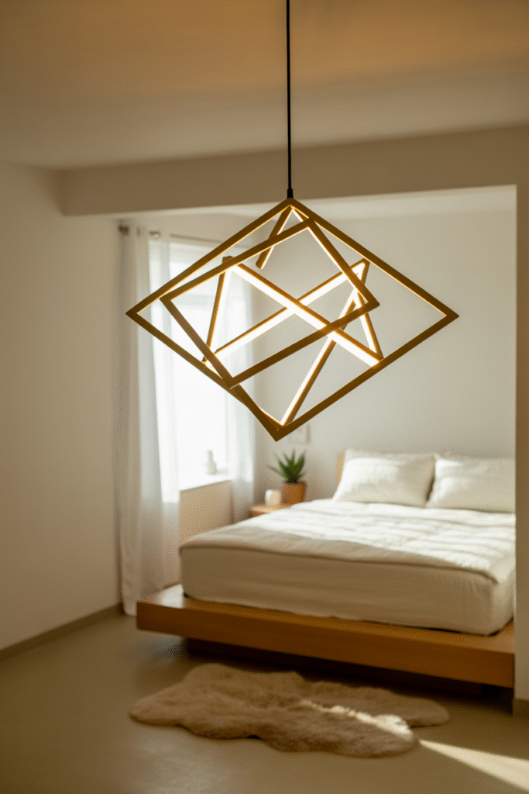
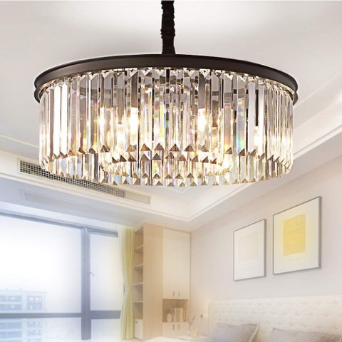
MEELIGHTING Gold Plated Modern Crystal Chandelier, Contemporary Raindrop Pendant Light
Shop on Amazon2. Don't Skip Candles
Real candlelight brings a warmth and flicker no bulb fully replicates, even a dimmed one.
A cluster of candles on a dresser or nightstand adds genuine ambiance for very little cost.
This works best as a layer on top of practical lighting, not a replacement for it.
It's one of the cheapest mood upgrades on this entire list.
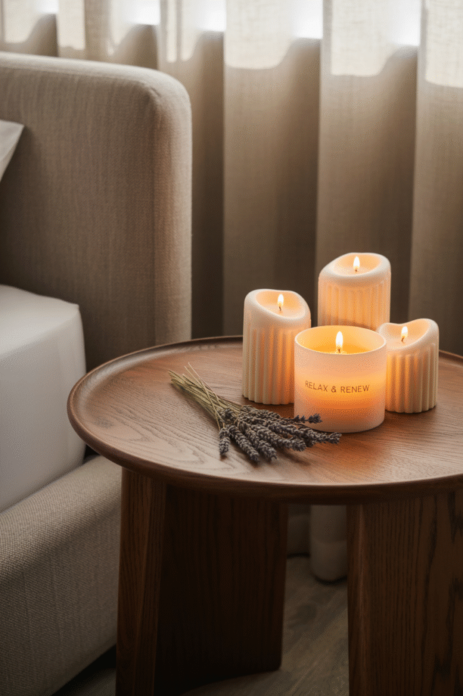
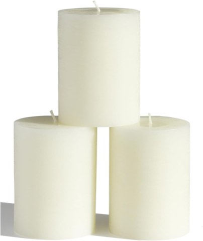
CANDWAX 3x4 inch Pillar Candles Set of 3, Unscented Dripless Rustic Ivory
Shop on Amazon3. Light Your Mirror Properly
A mirror with its own dedicated lighting, sconces on either side, or a backlit frame, makes a real difference for anyone getting ready in the room.
This solves the same shadow problem bathroom vanity lighting does, just in a bedroom context.
Warm, even light at the mirror beats relying on whatever ambient light happens to reach that corner.
A practical upgrade if you do your daily routine in the bedroom rather than the bathroom.
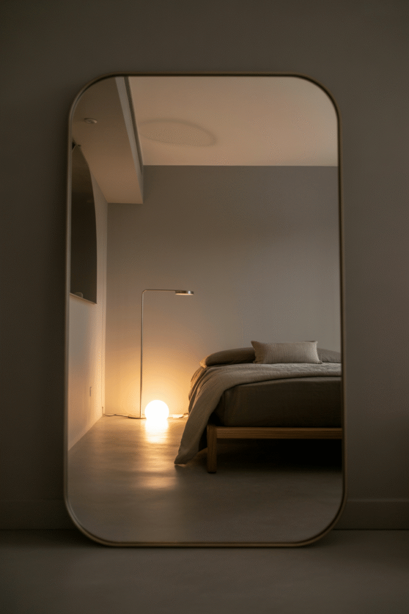
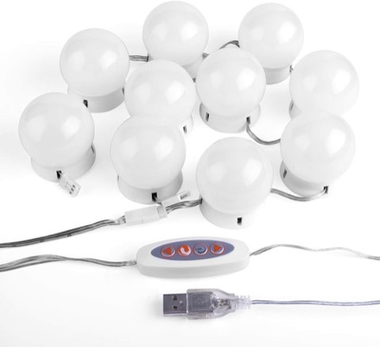
BEAUTME Hollywood LED Vanity Mirror Lights Kit with Dimmable Light Bulbs
Shop on Amazon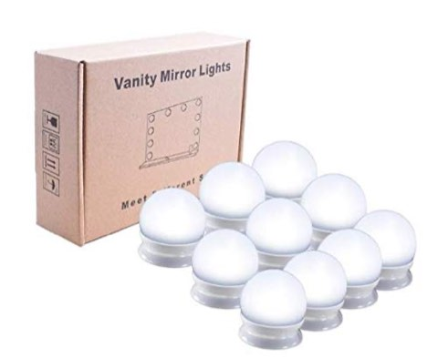
Hollywood Style LED Vanity Mirror Lights Kit with Dimmable Light, 10 Bulbs, USB
Shop on Amazon4. Try Backlighting
A light source placed behind a headboard, a piece of furniture, or along a shelf edge creates a soft glow without a visible fixture.
This is a genuine designer trick that's become much more accessible with affordable LED strip lighting.
The indirect, diffused effect reads as more sophisticated than a direct light source in the same spot.
It takes a bit more setup than most ideas on this list, but the visual payoff is real.
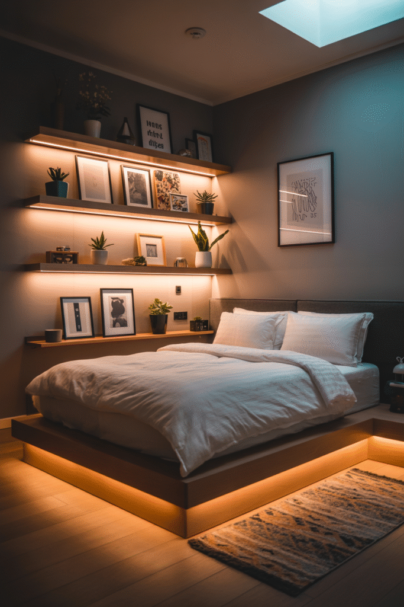
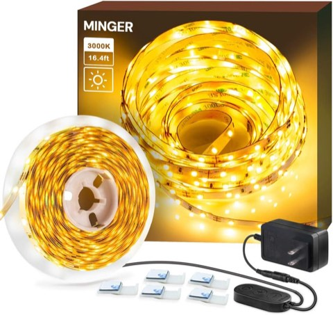
MINGER Dimmable LED Strip Lights, 3000K Warm White, 16.4ft Flexible Light Strip
Shop on Amazon5. Add Lamps With Real Intention
A good table or floor lamp does more than provide light. It's a genuine styling object in its own right.
Choosing a lamp with real presence, rather than a purely functional afterthought, elevates the whole nightstand or corner it sits in.
A warm-toned bulb matters here just as much as everywhere else on this list.
Treat the lamp choice as a decor decision, not just a lighting one.
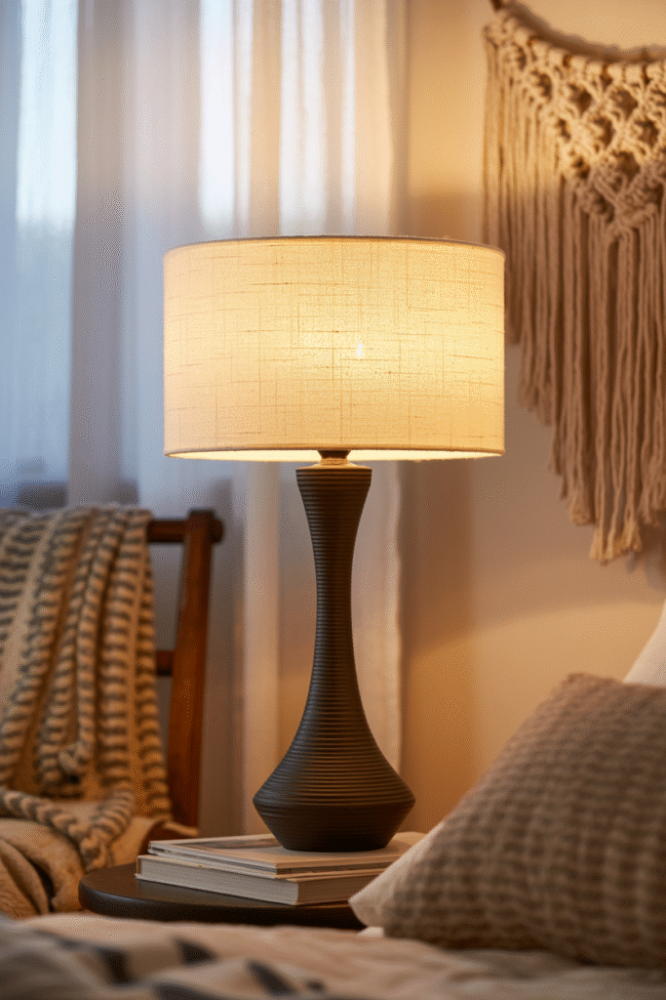
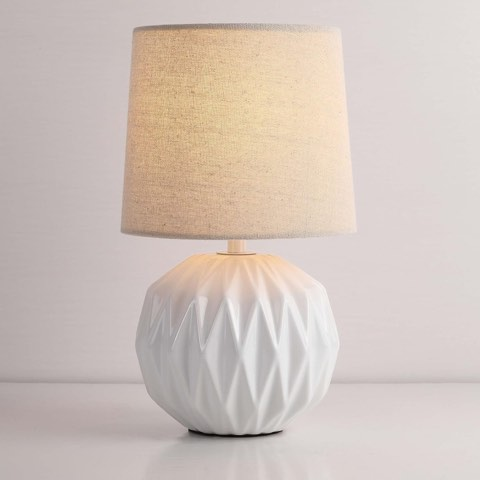
White Ceramic Table Lamp, Geometric Textured Small Bedside Lamp with Linen Shade
Shop on Amazon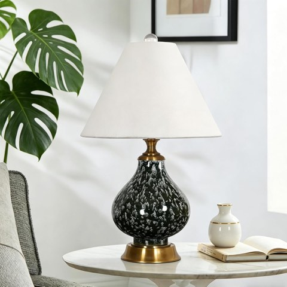
CACHREOON Black Ceramic Table Lamp with Beige Linen Shade, Modern Minimalist Bedside Lamp
Shop on Amazon6. Install a Dimmer
A dimmer switch does more for a room's flexibility than almost any single fixture change.
One fixture becomes several different brightness levels, covering everything from bright morning light to a soft evening glow.
This is a relatively simple electrical upgrade, though it may require an electrician depending on your existing wiring.
It's one of the best returns on investment on this entire list.
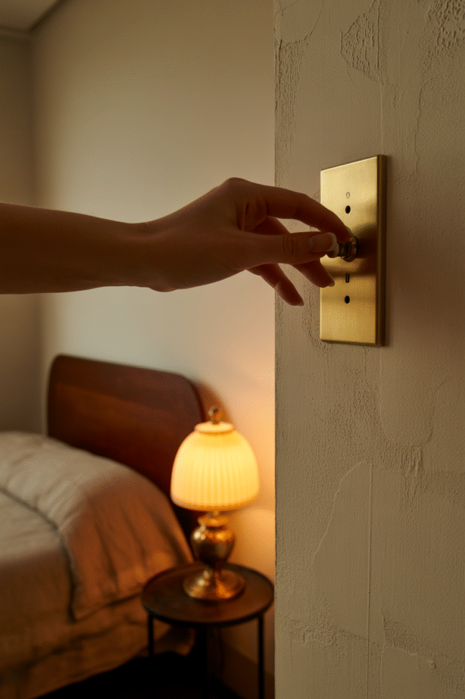
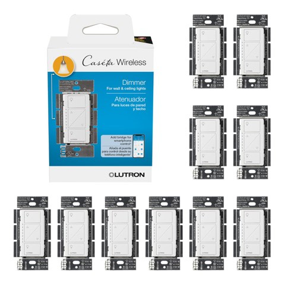
Lutron Caseta Smart Dimmer Switch, Smart Hub Required, No Neutral Required
Shop on AmazonLutron Caseta Diva Smart Dimmer Switch, Smart Hub Required, No Neutral Req
Shop on Amazon7. Add Smart Lighting for Zero-Effort Changes
A smart bulb or smart switch lets the whole room shift from bright to dim without you getting out of bed.
This is less about a specific look and more about convenience. The exact lighting level for the exact moment, on demand.
Scheduling automatic dimming in the evening adds a small but genuinely useful routine.
Worth the investment if you adjust lighting throughout the night regularly.
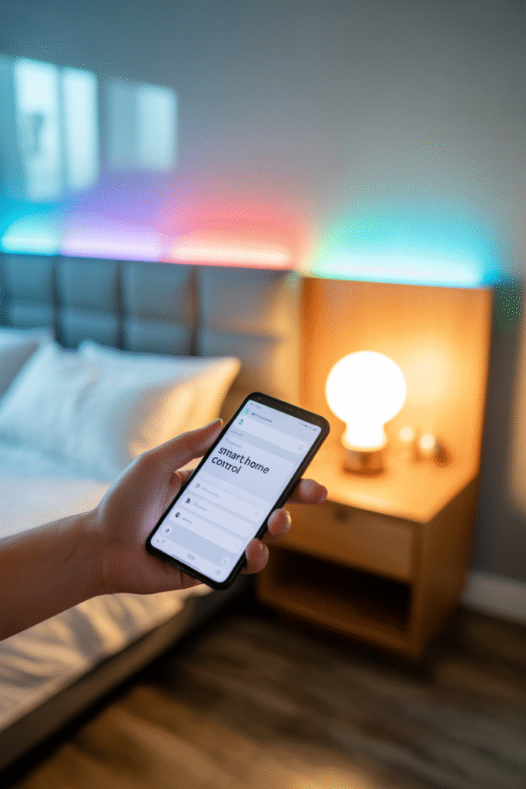
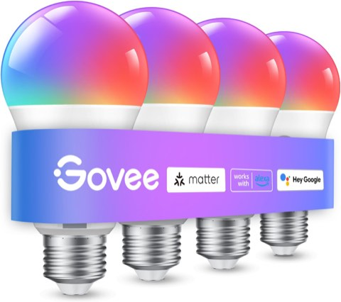
Govee Smart Light Bulbs, A19 Color Changing Light Bulb, 800 LM, E26 Base
Shop on Amazon8. Use Wall Sconces to Save Nightstand Space
A sconce mounted above or beside the bed frees up nightstand surface that a table lamp would otherwise take.
This matters more in a smaller bedroom, where every inch of nightstand space counts.
Sconces also add a more intentional, designed look than a lamp alone typically does.
Worth considering if you've run out of room on a small nightstand.
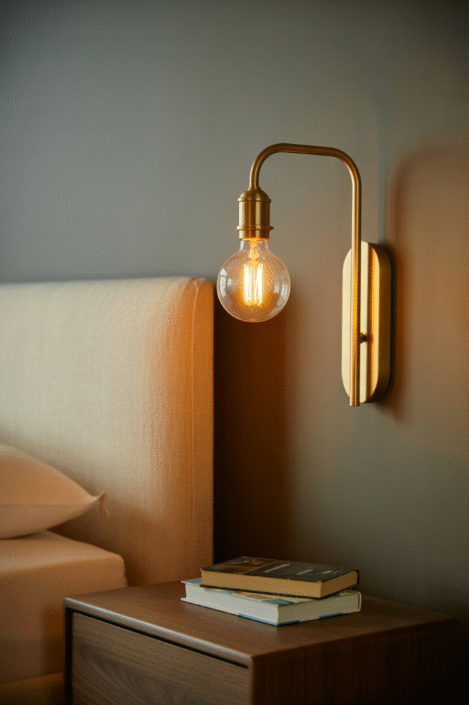
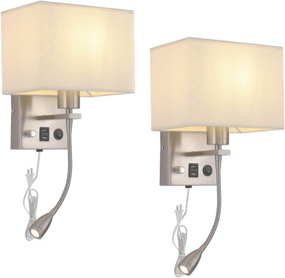
Galtlap Plug-in Wall Sconces, Set of 2, Bedside Reading Lights with USB Ports, Brushed Nickel
Shop on Amazon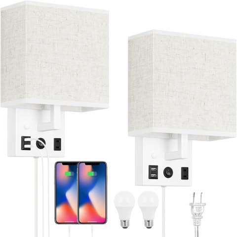
YBING Bedside Wall Lamp Set of 2, Modern Wall Sconces with Plug in Cord Nightstand Wall
Shop on Amazon9. Don't Dismiss Fairy Lights
A string of warm fairy lights adds a soft, ambient glow that a single lamp can't replicate.
Draped along a headboard, a shelf, or around a window frame, they work as a low-commitment accent rather than a primary light source.
This isn't just a dorm-room trick. Done with restraint, it reads as genuinely styled in any bedroom.
A cheap, flexible addition that's easy to remove or reposition later.
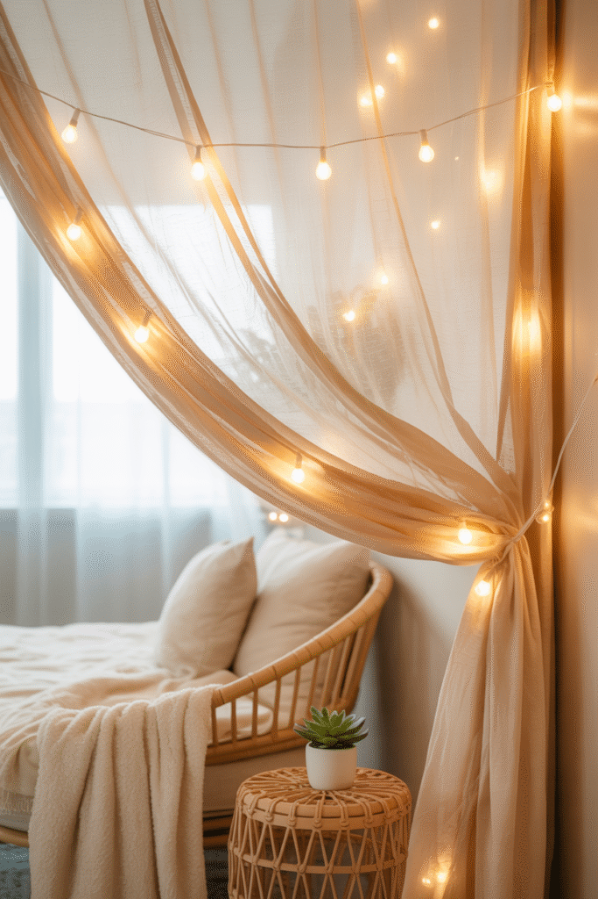
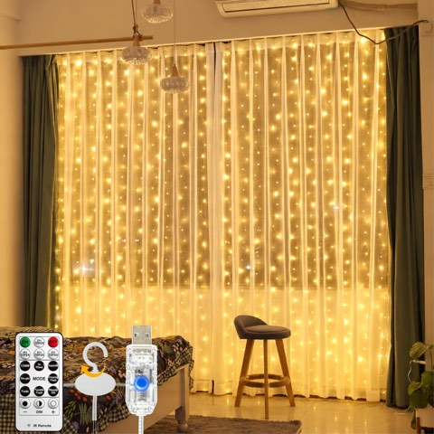
ZSJWL 300 LED Curtain Fairy Lights with Remote, 9.8 × 9.8 Ft, USB Plug in
Shop on Amazon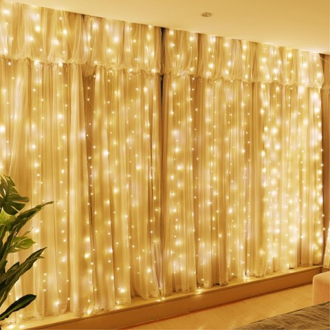
HXWEIYE 300LED Fairy Curtain Lights, 9.8x9.8Ft USB, Remote, 8 Modes & Timer
Shop on Amazon10. Skip the Cold Bulbs
A cool white bulb reads as clinical in a bedroom, working directly against the relaxed mood the room is supposed to have.
Warm-toned bulbs, generally in the 2700 to 3000K range, create a softer, more flattering light throughout the space.
This is one of the cheapest, fastest fixes on this entire list. Often just a bulb swap, nothing more.
Worth doing before any other change on this list.
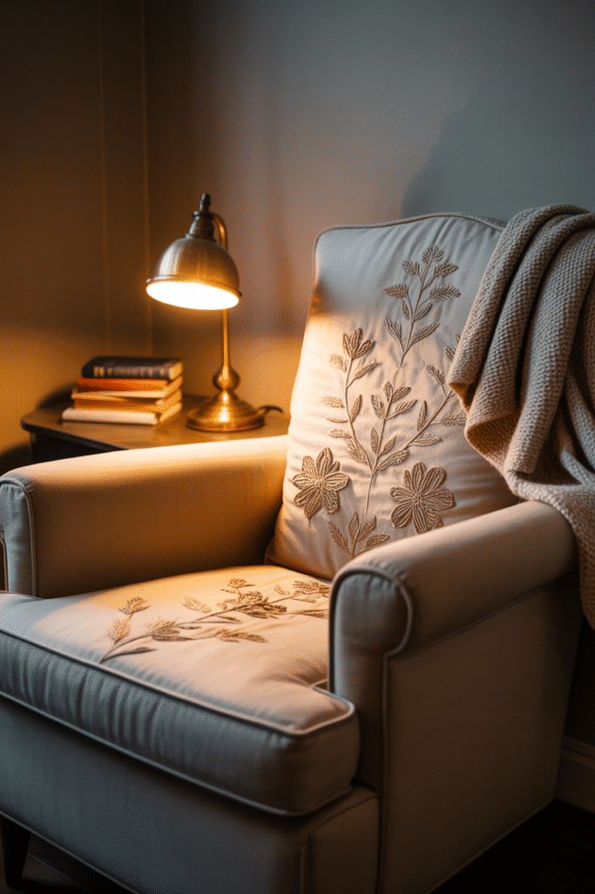
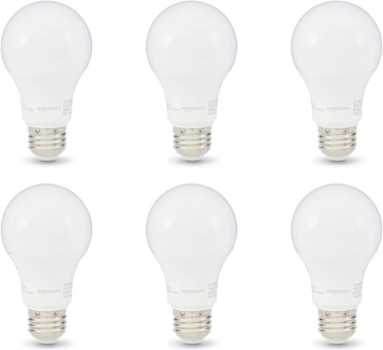
Amazon Basics A19 LED Light Bulbs, 60 Watt Equivalent, Energy Efficient 9W
Shop on Amazon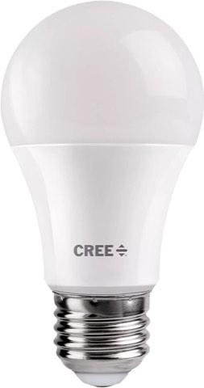
Cree Lighting Basic Series A19 Bulb, 2700K Dimmable LED Bulb, 60W + 800 Lumens
Shop on Amazon11. Layer the Light Sources
A single ceiling fixture can't cover every mood a bedroom needs.
Combining overhead, task, and ambient lighting, even just two of the three, gives the room actual flexibility throughout the day.
This is the organizing idea behind most of what's on this list.
Start here before adding any individual fixture type.
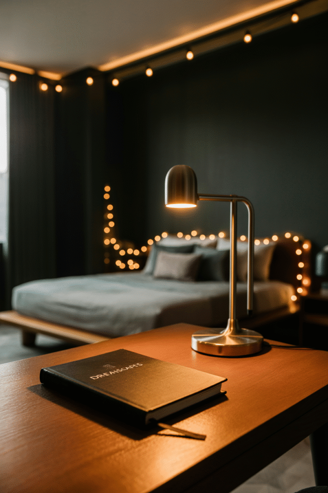
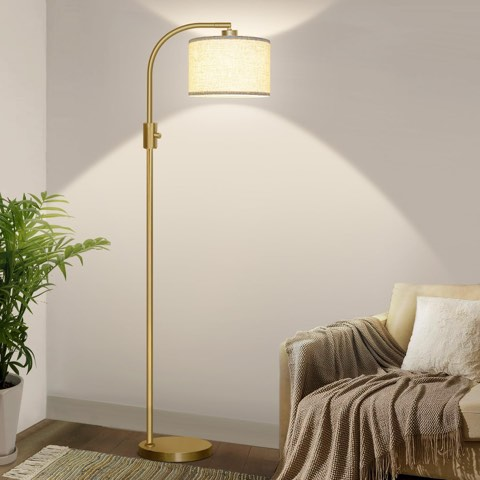
Nintiue Upgraded Modern Arc Dimmable Tall Standing Floor Lamp with Linen Shade
Shop on Amazon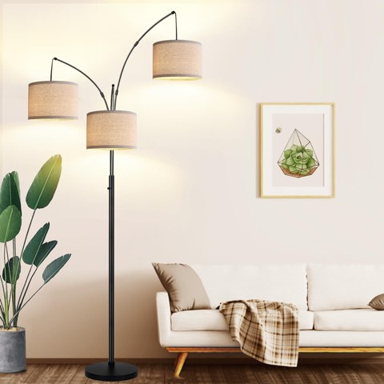
Dimmable 3 Light Arc Floor Lamp, Mid Century Tree Floor Lamp, Beige Shades
Shop on AmazonQuick Recap
Layer at least two types of lighting rather than relying on one.
Choose warm-toned bulbs throughout.
Add a dimmer wherever the budget allows.
Treat lamps, sconces, and any statement fixture as genuine decor choices, not afterthoughts.
Start With the Cheap Fixes
None of these 11 ideas require a full bedroom renovation to try.
A bulb swap and a dimmer alone cover most of the mood-setting work most people are actually after.
Layer in the rest gradually, fairy lights, candles, a statement fixture, as budget and interest allow.
The right lighting genuinely does more for a bedroom's feel than almost any other single change you could make.